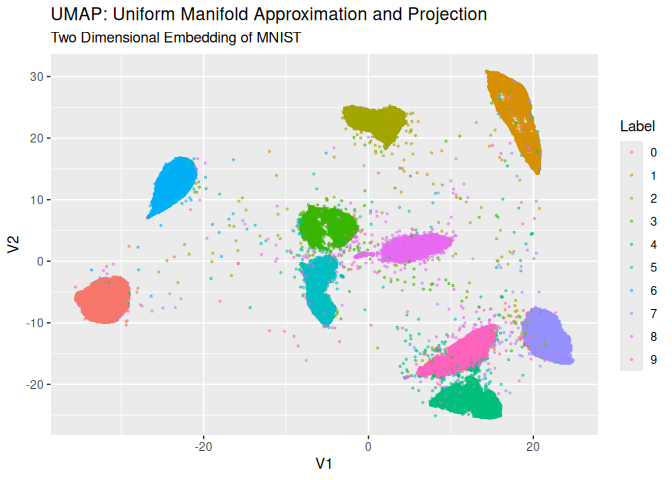

The goal of {cuda.ml} is to provide a simple and intuitive R interface for RAPIDS cuML. RAPIDS cuML is a suite of GPU-accelerated machine learning libraries powered by CUDA. {cuda.ml} is under active development, and currently implements R interfaces for the algorithms listed below (which is a subset of algorithms supported by RAPIDS cuML).
Supported Algorithms
| Category | Algorithm |
|---|---|
| Clustering | Density-Based Spatial Clustering of Applications with Noise (DBSCAN) |
| K-Means | |
| Single-Linkage Agglomerative Clustering | |
| Dimensionality Reduction | Principal Components Analysis (PCA) |
| Truncated Singular Value Decomposition (tSVD) | |
| Uniform Manifold Approximation and Projection (UMAP) | |
| t-Distributed Stochastic Neighbor Embedding (TSNE) | |
| Linear Models for Regression or Classification | Linear Regression (OLS) |
| Ridge, lasso, and elastic-net linear regression | |
| Logistic and multinomial regression | |
| Nonlinear Models for Regression or Classification | Random Forest (RF) classification with nvForest inference |
| Random Forest (RF) regression with nvForest inference | |
| CPU or GPU nvForest inference for XGBoost, LightGBM, and Treelite models | |
| K-Nearest Neighbors (KNN) classification with brute-force, IVFFlat, or IVFPQ indexes | |
| K-Nearest Neighbors (KNN) regression with brute-force, IVFFlat, or IVFPQ indexes | |
| Support Vector Machine Classifier (SVC) | |
| Epsilon-Support Vector Regression (SVR) |
cuda.ml generally provides single-GPU implementations. Interfaces that expose device_id, currently nvForest inference, can target a particular GPU.
Examples
Using {cuda.ml} for supervised ML tasks through {parsnip}
{cuda.ml} provides {parsnip} bindings for supervised ML algorithms such as linear_reg, logistic_reg, multinom_reg, rand_forest, nearest_neighbor, svm_rbf, svm_poly, and svm_linear. Install {parsnip} separately to use these optional bindings.
Regularized models follow tidymodels conventions for penalty and mixture. When predictors need scaling, learn and apply it explicitly with a {recipes} step such as step_normalize(all_numeric_predictors()).
The following example shows how {cuda.ml} can be used as a {parsnip} engine to build a SVM classifier.
library(dplyr, warn.conflicts = FALSE)
library(parsnip)
library(cuda.ml)
set.seed(11235)
train_inds <- iris %>%
mutate(ind = row_number()) %>%
group_by(Species) %>%
slice_sample(prop = 0.7)
train_data <- iris[train_inds$ind, ]
test_data <- iris[-train_inds$ind, ]
model <- svm_rbf(mode = "classification", rbf_sigma = 10, cost = 50) %>%
set_engine("cuda.ml") %>%
fit(Species ~ ., data = train_data)
preds <- predict(model, test_data)
cat("Confusion matrix:\n\n")
#> Confusion matrix:
preds %>%
bind_cols(test_data %>% select(Species)) %>%
yardstick::conf_mat(truth = Species, estimate = .pred_class)
#> Truth
#> Prediction setosa versicolor virginica
#> setosa 15 0 0
#> versicolor 0 12 1
#> virginica 0 3 14Using {cuda.ml} for unsupervised ML tasks
The following example shows how {cuda.ml} can be used for unsupervised ML tasks such as k-means clustering.
library(cuda.ml)
clustering <- cuda_ml_kmeans(
iris[, which(names(iris) != "Species")],
k = 3, max_iters = 100, seed = 0L
)
# Expected outcome: there is strong correlation
# between cluster labels and `iris$Species`
str(clustering)
#> List of 4
#> $ labels : int [1:150] 1 1 1 1 1 1 1 1 1 1 ...
#> $ centroids: num [1:3, 1:4] 5.9 5.01 6.85 2.75 3.43 ...
#> $ inertia : num 78.9
#> $ n_iter : int 100
library(dplyr, warn.conflicts = FALSE)
tibble(cluster_id = clustering$labels, species = iris$Species) %>%
group_by(cluster_id) %>% count(species)
#> # A tibble: 5 × 3
#> # Groups: cluster_id [3]
#> cluster_id species n
#> <int> <fct> <int>
#> 1 0 versicolor 48
#> 2 0 virginica 14
#> 3 1 setosa 50
#> 4 2 versicolor 2
#> 5 2 virginica 36Using {cuda.ml} for visualizations
{cuda.ml} also features R interfaces for algorithms such as UMAP and t-SNE, which are useful when one needs to visualize clusters of high-dimensional data points by embedding them onto low-dimensional manifolds (i.e., 4 dimensions or fewer).
For example, the code snippet below shows how cuda_ml_umap() can be used to visualize the MNIST hand-written digits dataset, and also, the coloring based on the true label of each sample demonstrates how well the UMAP algorithm transforms different hand writings of the same digit into nearby points in a 2D embedding:
library(cuda.ml)
library(ggplot2)
library(magrittr)
# load mnist
source("data-raw/load-mnist.R")
str(mnist_images)
#> int [1:28, 1:28, 1:60000] 0 0 0 0 0 0 0 0 0 0 ...
str(mnist_labels)
#> int [1:60000(1d)] 5 0 4 1 9 2 1 3 1 4 ...
# flatten each image to a 1d array, combine into a matrix with 1 row per image
flatten <- function(img) {
dim(img) <- NULL
img
}
flattened_mnist_images <-
mnist_images %>% asplit(3) %>% lapply(flatten) %>% do.call(rbind, .)
# embed
embedding <- cuda_ml_umap(
flattened_mnist_images, n_components = 2, n_neighbors = 50,
local_connectivity = 15, repulsion_strength = 10, seed = 0L
)
str(embedding$transformed_data)
#> num [1:60000, 1:2] -7.08 -32.55 9.61 20.65 12.25 ...
# visualize
embedding$transformed_data %>%
as.data.frame() %>%
dplyr::mutate(Label = factor(mnist_labels)) %>%
ggplot(aes(x = V1, y = V2, color = Label)) +
geom_point(alpha = .5, size = .5) +
labs(title = "UMAP: Uniform Manifold Approximation and Projection",
subtitle = "Two Dimensional Embedding of MNIST")
From this type of visualization, we can qualitatively understand the following about the MNIST dataset:
- The dataset can be reasonably classified into some number of categories.
- The right number of categories may be any where between 9 and 11.
- While there are some categories that are clearly distinguishable from others, there are others that have less clear boundaries with their neighbors.
- A small fraction of data points did not fit particularly well into any of the categories.
- Most data points belonging to the same digit category are clustered together in the UMAP output
Installation
Install the R package from CRAN, then prepare its native backend and runtime:
install.packages("cuda.ml")
cuda.ml::cuda_ml_install()The CRAN package contains no compiled code. cuda_ml_install() prepares a native backend with the pinned CUDA 13.2.2, RAPIDS cuML and nvForest 26.06, and Treelite 4.7.0 stack. The complete runtime is about 1.6 GiB. Repeated calls reuse the prepared cache.
For a deployment that only runs nvForest inference on a CPU, prepare the separate CUDA-free backend instead:
cuda.ml::cuda_ml_install(device = "cpu")Native operations require Linux x86_64 with glibc 2.28 or newer. GPU operations also require a supported NVIDIA GPU and driver 580 or newer; the CPU-only nvForest backend requires neither.
See Install and manage cuda.ml for cache configuration, mirrors, runtime audits, supported GPU architectures, and source builds.
Development version
A development installation uses the same downloaded backend pathway:
# install.packages("devtools")
devtools::install_github("mlverse/cuda.ml")
cuda.ml::cuda_ml_install()